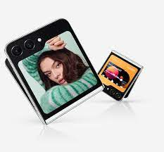

Catálogo Samsung
Hay que saber adaptarse a los cambios, dejarse llevar y ser más flexible. Y si puedes contar
con un Smartphone que cambie contigo, mucho mejor. Samsung Galaxy Z Flip5 te ofrece un sinfín
de opciones de forma cómoda y práctica. Con un diseño mucho más compacto, ligero y resistente
para que puedas contar con tu Smartphone en todas tus escapadas y fiestas nocturnas. Inmortaliza
tus momentos favoritos con la mejor cámara para selfies y captura tus mejores recuerdos.
Galaxy Z Flip5 está diseñado para convertirse en tu nuevo e inseparable compañero de
experiencias irrepetibles.
Características
-
Enamórate de un diseño plegable icónico: La estética renovada del nuevo Galaxy Z Flip5 te
atrapará al instante. Ahora presenta un diseño mucho más compacto y fino para que puedas
plegarlo y llevarlo cómodamente allá donde quieras y como quieras. Fabricado con materiales
que mejoran la resistencia y la robustez del dispositivo para favorecer su durabilidad,
Galaxy Z Flip5 ha llegado para quedarse, ofreciéndote todo lo necesario para encajar con
tu estilo de vida.
-
La mejor cámara para selfies: Tus momentos únicos merecen ser retratados con la mejor
calidad que una cámara puede ofrecer. Descubre una nueva forma de lanzar tus vídeos y tus
fotos al combinar la pantalla exterior de tu Smartphone con las cámaras profesionales
incorporadas en el dispositivo. Consigue selfies únicos y espectaculares y almacena tus
recuerdos con todo lujo de detalles.
-
Toda la energía que necesitas: A la hora de la verdad, la eficiencia lo es todo. Galaxy Z
Flip5 ofrece una potencia inimaginable para cumplir con todas tus expectativas. Equipado con
un procesador avanzado, tu Smartphone plegable te permite trabajar, divertirte, crear y
compartir todo tipo de contenido multimedia sin restricciones, como siempre has deseado.
-
Batería de gran capacidad para seguirte el ritmo: Puedes dejar de
preocuparte por el número de vídeos que has hecho durante ese concierto o por todas las
fotos de ese viaje tan especial que te gustaría guardar. Galaxy Z Flip5 dispone de una
batería de larga duración para que puedas trabajar y divertirte sin que tengas que estar
buscando constantemente un enchufe para recargar energía.
-
Diseño duradero respetuoso con el medio ambiente: Galaxy Z Flip5 está
fabricado con materiales reciclados para prolongar la vida del dispositivo. ¡Incluso la
caja! La pantalla, por otra parte, cuenta con la protección Gorilla Glass Victus 2 y
los marcos laterales son de Armour Aluminium. También cuenta con la certificación de
resistencia al agua IPx8.
Especificaciones
- Pantalla,
Interior: 6.7” FHD+ (2640 x 1080) (120Hz) Dynamic AMOLED 2,
Exterior: 3.4“ HD (720 x 748) Super AMOLED
- SO: Android 13
- Procesador: Qualcomm Snapdragon 8 Gen 2 for Galaxy (SM8550) Octa-Core (3.36GHz, 2.8GHz, 2GHz)
- Memoria: 8GB + 256 GB
- Batería
3700 mAh

Imagina poder disponer de la mayor potencia tecnológica y las características propias del mejor
ordenador en tu bolsillo para poder trabajar y disfrutar de contenido multimedia donde y cuando
lo desees. Samsung Galaxy Z Fold5 llega para revolucionar tu estilo de vida al ofrecerte
múltiples posibilidades que cambian tanto tu manera de afrontar tus proyectos profesionales
como tus ratos de ocio y entretenimiento. Con un diseño mucho más compacto, ligero y resistente
para que puedas contar con tu Smartphone allá donde lo necesites. Galaxy Z Fold5 aparece para
establecer un nuevo estándar de multitarea, lo que lo convierte en un dispositivo indispensable
para disfrutar más de tu día a día.
Características
-
Diseño perfecto para una jornada perfecta: Gracias al estilo renovado de
Galaxy Z Fold5 no querrás volver a trabajar de otra forma. El Smartphone del momento ahora
cuenta con un diseño mucho más compacto y ágil para que sea más sencillo llevarlo allá donde
y como quieras. Fabricado con materiales reciclados para lograr un resultado más resistente
y robusto, Galaxy Z Fold5 está pensado para durar mucho tiempo, adaptándose a tu intenso
ritmo de vida para que puedas disponer de él en cualquier situación.
-
Una experiencia multitarea a otro nivel: En este caso, quien mucho abarca,
puede con todo. Galaxy Z Fold5 redefine el concepto de la multitarea al presentar una
interfaz optimizada que hace posible gestionar varias aplicaciones de manera simultánea,
lo que agiliza tu trabajo. El gran tamaño de pantalla facilita la visualización de varios
documentos y la incorporación de múltiples elementos, para que puedas trabajar más rápido y
con mayor comodidad.
-
Máxima eficiencia para optimizar tu productividad: Más eficiencia, más
potencia. Trabajar con Galaxy Z Fold5 te permitirá sacar adelante todas tus tareas en menos
tiempo y de manera más ágil y dinámica. Equipado con un procesador avanzado para llevar a
cabo los proyectos profesionales más exigentes o para que te diviertas con los videojuegos
más actuales. Tu dispositivo plegable cumple con todas las expectativas.
-
Batería de larga duración para rendir durante toda la jornada: Con Galaxy
Z Fold5, la seguridad y la tranquilidad están garantizadas. La batería del nuevo dispositivo
optimiza su rendimiento para que puedas continuar con tus tareas allá donde estés, sin más
limitaciones ni restricciones.
-
Durabilidad comprometida con el medio ambiente: Para la fabricación de
Galaxy Z Fold5 se ha contado con materiales reciclados y de gran resistencia para alargar
la vida del dispositivo. De hecho, hasta la caja se prepara con papel reciclado. La pantalla
también cuenta con la protección de Gorilla Glass Victus 2 para el cristal y el cuerpo es de
Armour Aluminium. Con la certificación de resistencia al agua IPx8, tu smartphone está
completamente preparado para que lo utilices donde quieras.
Especificaciones
- Pantalla,
Interior: 7.6” QXGA+ (2176 x 1812) (120Hz) Dynamic AMOLED 2X,
Exterior: 6,2” 2316 x 904 (HD+) (120Hz) Dynamic AMOLED 2X
- SO: Android 13
- Procesador. Qualcomm Snapdragon 8 Gen 2 for Galaxy (SM8550) Octa-Core (3.36GHz, 2.8GHz, 2GHz)
- Memoria: 12GB + 256 GB
- Batería 4400 mAh
Samsung Galaxy S23 Ultra supera los límites de la categoría Premium en todo sentido y te permite
demostrarle al mundo de lo que eres capaz de hacer. Descubre una configuración de 5 cámaras
épicas y un rendimiento sorprendente que no te abandonará nunca. Transforma este dispositivo en
un ordenador cuando lo necesites con la ayuda de Samsung Dex y lleva tus proyectos contigo donde
sea que vayas. Galaxy S23 Ultra fue diseñado para aquellos que viven una vida llena de momentos
increíbles y necesitan un dispositivo que cumpla con sus exigencias.
Características
-
La mejor cámara de noche con Nightography: Hazte con una cámara épica
a la altura del contenido que quieres hacer. Lanza tus vídeos y fotos al estrellato con una
cámara profesional capaz de capturar imágenes RAW. Haz selfies, vídeos y retratos de noche
con lujo de detalle, calidad y detalle como si fuera pleno día.
-
Descubre una experiencia de visualización mejorada: La pantalla de Galaxy
S23 Ultra es amor a primera vista. Te enamorarás de tus contenidos favoritos aún más. El
brillo de la pantalla ha incrementado, permitiéndote visualizar perfectamente tu contenido
incluso debajo del sol más intenso. El brillo se adapta a cada situación del entorno de
manera inteligente. También en la noche, Galaxy S23 Ultra cuenta con un modo noche más
agradable que protege tu visión.
-
Mayor potencia, mayor rendimiento: Galaxy S23 Ultra ofrece una potencia
increíble para hacer todo lo que te propongas sin siquiera resentirse. Cuenta con un
sistema de refrigeración aún más grande y su procesador de 4nm está optimizado para rendir
en todo tipo de situaciones de estrés. Juega, trabaja, crea y comparte sin problemas, como
siempre te lo has imaginado.
-
¿Un Smartphone que se convierte en ordenador?: Ya lo tienes. Consigue
una potente experiencia de ordenador en tu Galaxy S23 Ultra. Transmite DeX de forma
inalámbrica a un televisor compatible y convierte tu móvil en un PC. Si tienes un teclado
y un ratón Bluetooth, solo tienes que emparejarlos con tu dispositivo Galaxy para controlar
la pantalla.
-
Batería aún más grande para todos tus planes: No importa si eres de los
que se la pasan el día entero haciendo fotos y vídeos, o si eres de los que dicen "La última
partida antes de dormir" después de 5 últimas partidas. Galaxy S23 Ultra cuenta con una
batería de larga duración capaz de seguir el ritmo de tus aficiones y pasiones. Y lo mismo
para trabajar.
Especificaciones
- Sistema operativo Android 13
- Procesador Qualcomm Snapdragon 8, Gen 2 Octa-Core (3.36GHz, 2.8GHz, 2GHz)
- Pantalla 6.8", 3088 x 1440 (QHD+) Dynamic AMOLED 2X (120 Hz)
- Memoria,
RAM: 12 GB,
Almacenamiento interno: 512 GB
.jpeg)
.jpeg)
.jpeg)
.jpeg)
.jpeg)